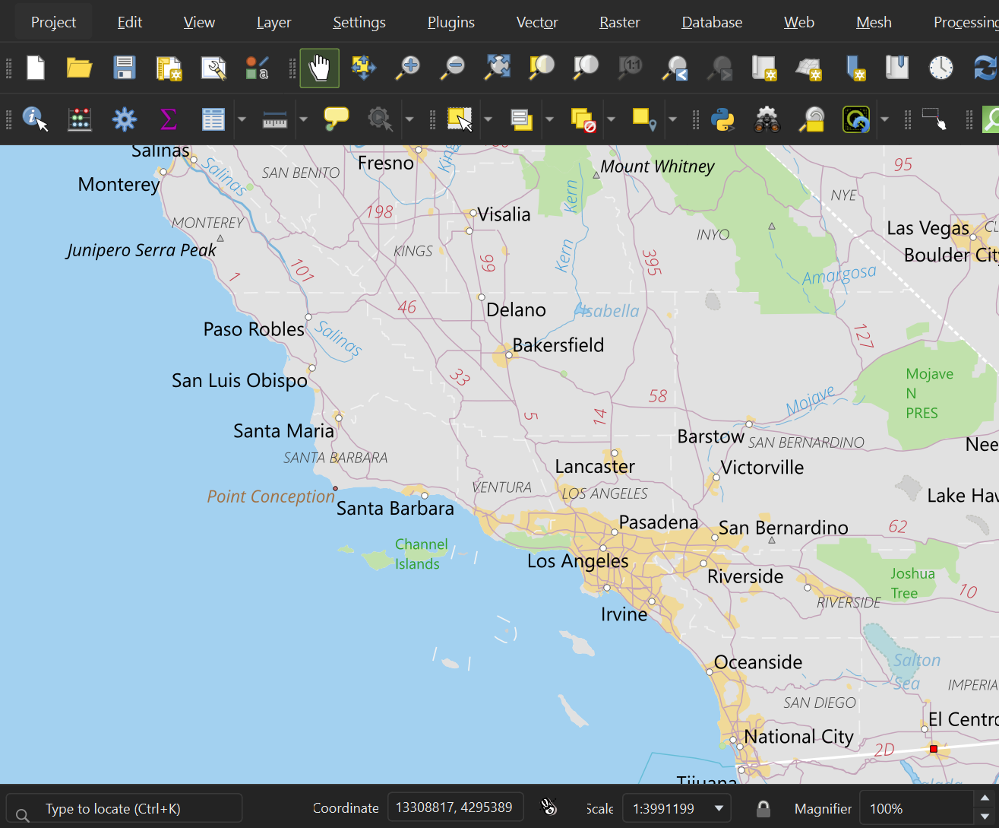
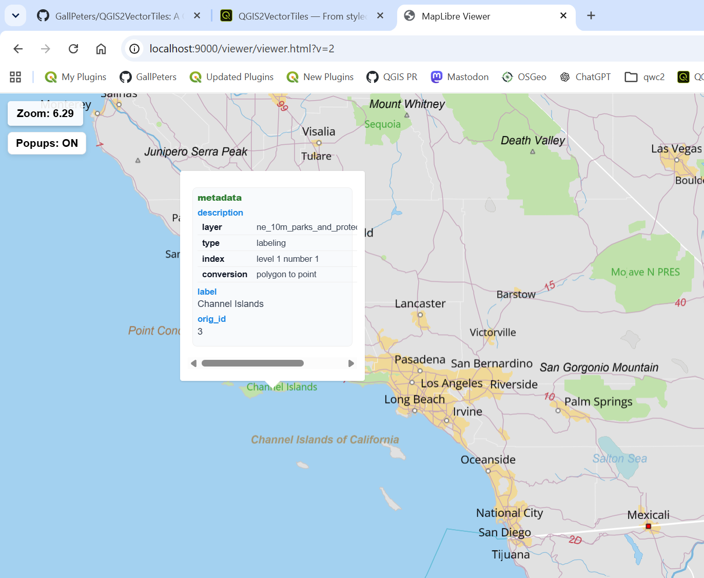
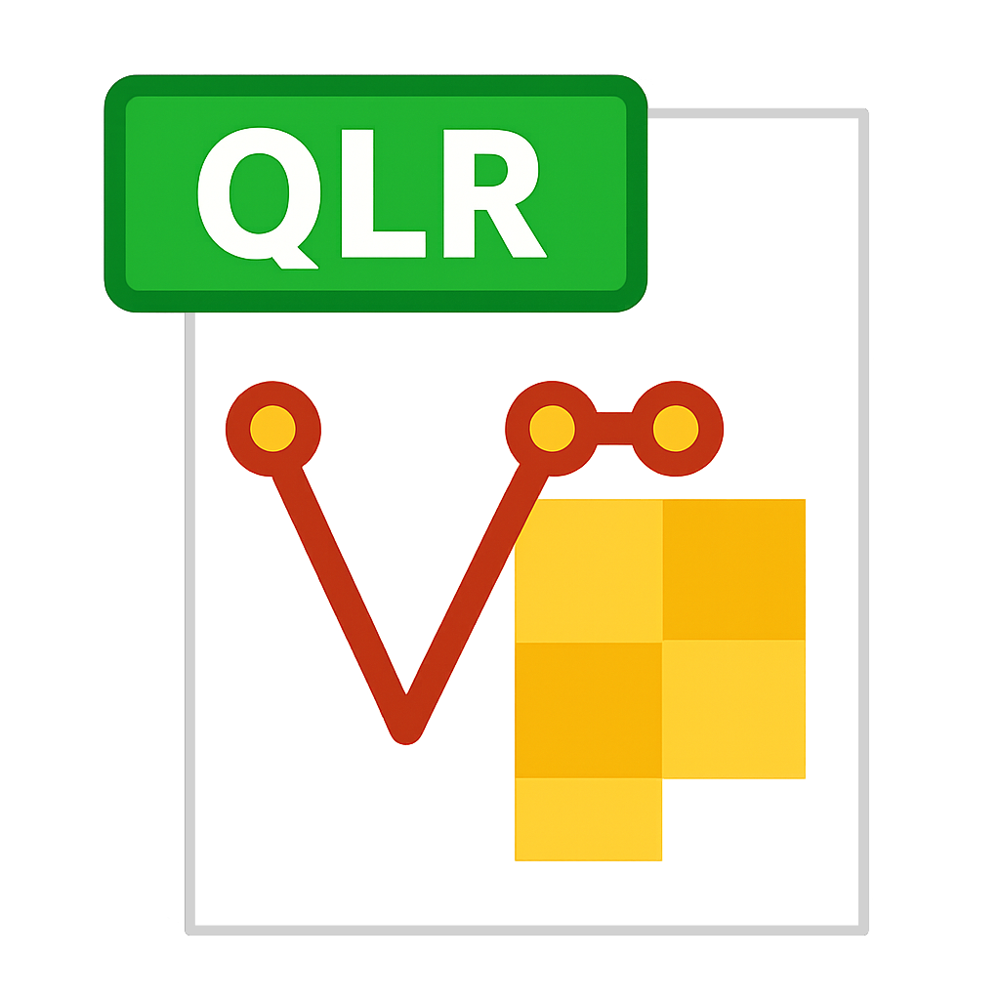

From QGIS projects to web maps in a single run


From complex styling to interactive map. Click nodes for source code.
From complex styling to interactive map. Tap any step for source code.
A complete, self-contained bundle ready to deploy anywhere.
Explore the rendering capabilities and feature fidelity.
Built to fit seamlessly into modern spatial stacks.
Drop the MapLibre style into your web map client. No server processing or on-the-fly rasterization-just fast, sharp, fully styled vector tiles rendered natively.
Compatible with Vector Tiles and GL Styles.
Serve vector tiles through standard GIS infrastructure. Benefit from smaller payloads, faster response times, and a single source of truth for your styles.
Share a single styled layer file instead of dozens of datasets, projections, and dependencies. The complex multi-source project is collapsed with visuals baked in.

1× .qlr LayerStandardized QGIS styling format integration.
Drop the MapLibre style into your web map client. No server processing or on-the-fly rasterization-just fast, sharp, fully styled vector tiles rendered natively.
Compatible with Vector Tiles and GL Styles.
Serve vector tiles through standard GIS infrastructure. Benefit from smaller payloads, faster response times, and a single source of truth for your styles.
Share a single styled layer file instead of dozens of datasets, projections, and dependencies. The complex multi-source project is collapsed with visuals baked in.
Standardized QGIS styling format integration.